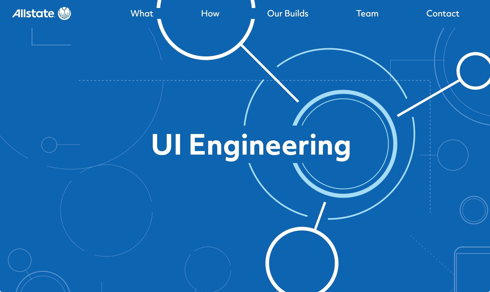

Good Times
The summer of my first year studying interaction design was a summer of firsts: first internship, first industry job, and not to mention the first time working with a whole suit of programs and tools in the UI Engineering team at Allstate. 12 weeks of particle colliders, SVG madness, and wrestling with React equipped me for not just the next year of university but work in the industry. All in all, a brilliant experience an opportunity to level up not just practical design and coding skills but also learn the process behind taking a product from concept to execution and all the entails.

As a first year interaction design student entering a 12 week internship at Allstate NI without the faintest idea what they were getting themselves into, I chronicled the highs, lows, and epic fails to help others in a similar situation. The whole series is on Medium for your reading pleasure. My hope is you will find the tales of daily intern struggles enlightening or at the very least entertaining. To follow the story from the beginning:
- Week 1: Induction, introductions, and more javascript than I’ve done in my life.
- Week 2: Research, new branding, and free donuts.
- Week 3: Logo animations, demos, and an improvised design studio.
- Week 4: Sass, narrowing it down, and wireframes.
- Week 5: Mockups, design analysis, and crafting the final concept.
- Week 6: Laying the foundation, ReactJS theory, and development begins.
- Week 7: Copywriting, components, and so many icons.
- Week 8: Colour mixing, GreenSock meltdown, and SVG restructuring.
- Week 9: Responsive SVGs, user testing, and UI interactions.
- Week 10: GreenSock conquered, CSS grid, and LUMA exercises.
- Week 11: Conquering the redesign, last minute icons, and scroll triggered animations.
- Week 12: Polishing up the initial launch, team presentations, and pizza parties.
Made to the Sound of Lizzo - Good as Hell
-Kez